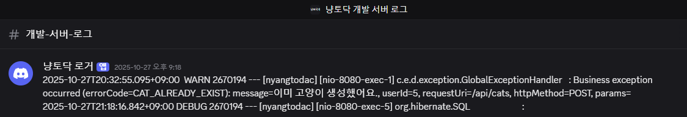

카카오테크캠퍼스 냥토닥 프로젝트에서 서비스 안정성 확보와 팀원들의 개발 효율 향상을 위해 개발 환경 인프라를 구축한 사례입니다.
작업물을 바로 운영 서버에 반영하는 불안정한 구조로 인해 작업물에 문제가 있을 경우 운영 서버가 작동하지 않는 문제가 있었습니다.
정상 작동을 확인하는 통합 테스트는 운영 서버로만 가능했습니다. 이로 인해 환경 의존 문제와 같은 통합 이슈는 사전에 검증하기 힘든 형태였습니다.
운영 서버 외에는 실제 API 요청을 보낼 수 있는 환경이 없기 때문에 프론트엔드에서는 Mock 데이터에만 의존하여 개발하는 문제가 있었습니다. 이때 Mock 데이터를 관리하는 비용이 존재하고 페이지네이션, 에러 응답과 같은 예외 상황을 확인하기에는 제한적입니다.
운영 서버에 작업물을 바로 반영하는 구조는 배포 이후에야 문제를 발견하게 되는 위험이 있었습니다. 이를 방지하기 위해, 배포 전 중간 단계인 개발 서버를 구축하여 작업물을 반영할 수 있도록 하였습니다.
개발 서버로 인해서 CORS 문제를 빠르게 확인할 수 있었습니다. 환경 의존적인 CORS 정책으로 인한 문제는 개발 서버가 존재하지 않았더라면 프론트엔드, 백엔드가 모두 운영 환경에 배포를 한 뒤에야 문제가 발견될 수 있었습니다.
프론트엔드가 사용하는 Origin을 허용해주는 것으로 문제를 해결하였습니다.
@Bean
public CorsConfigurationSource corsConfigurationSource() {
CorsConfiguration config = new CorsConfiguration();
config.setAllowCredentials(true);
config.setAllowedOrigins(List.of("http://localhost:5173",
"https://kakao-tech-campus-3rd-step3.github.io/Team4_FE"));
config.setAllowedMethods(List.of("GET", "POST", "PUT", "DELETE", "PATCH", "OPTIONS"));
config.setAllowedHeaders(List.of("*"));
config.setExposedHeaders(List.of("*"));
UrlBasedCorsConfigurationSource source = new UrlBasedCorsConfigurationSource();
source.registerCorsConfiguration("/**", config);
return source;
}
개발 서버를 도입했지만 로그를 확인하기 위해서는 직접 서버에 SSH 접속을 해서 로그를 확인해야 하는 불편한 구조를 가지고 있었습니다. 또한 서버 접근 권한은 저에게 있었기에, 팀원들은 저를 통해 로그 확인을 요청해야 했습니다.
이런 구조는 문제 상황에 대한 인지를 지연시켰습니다.
이를 개선하기 위하여 팀원들에게 SSH 접속을 허용하는 방법이 있었지만, 직접 접속해서 확인하는 과정 자체가 번거로울 것이라고 판단하여 도입하지 않았습니다.
로그 확인 불가능 문제를 위해 두가지 해결법을 생각하였습니다.
팀원들에게 SSH 접속을 허용하는 방법이 있었지만, 직접 접속해서 확인하는 과정 자체가 번거로울 것이라고 판단하여 도입하지 않았습니다.
저는 팀원들과 디스코드를 통해 소통한다는 점을 고려하여 문제를 해결하기 위해 Discord Webhook 기능을 활용하였습니다.
새로운 로그가 생길 때마다 Webhook 요청을 보내는 쉘 스크립트를 작성하고 이를 systemd service로 만들어서 상시 실행되도록 만들었습니다.
이를 통해 팀원들은 개발 서버에서 발생하는 로그를 실시간으로 디스코드에서 확인할 수 있게 되었습니다.

이번 작업을 통해 코드의 품질 뿐만 아니라 개발 환경과 인프라 구조 또한 개발 생산성과 안정성에 큰 영향을 미친다는 점을 체감할 수 있었습니다.
개발 서버는 새로운 기능을 자유롭게 실험하고 다양한 상황을 검증할 수 있는 공간으로, 문제가 있는 작업물을 조기에 발견하여 운영 환경에 미치는 영향을 줄여주는 역할을 합니다. 이러한 구조는 결과적으로 서비스의 안정성과 신뢰성을 높이는데 도움이 되었습니다.
또한 개발 서버에서 발생한 문제를 팀원들과 공유하는 과정에서 문제를 발견하는 것 뿐만 아니라 이를 팀 전체가 인지할 수 있도록 전달하는 과정도 중요하다는 점을 느꼈습니다. 개인 프로젝트였다면 직접 서버에 접속해 로그를 확인하는 것으로 해결할 수 있었겠지만, 협업 환경에서는 문제를 팀원들과 효과적으로 공유할 수 있는 구조가 필요하다고 생각되었습니다.
이번 경험을 통해 문제를 조기에 발견하고 팀 전체가 빠르게 대응할 수 있는 개발 환경을 조성하는 것이 중요한 활동이라는 점을 배웠습니다. 앞으로 이러한 관점에서 개발 환경과 검증 구조를 더 개선해보고 싶습니다.